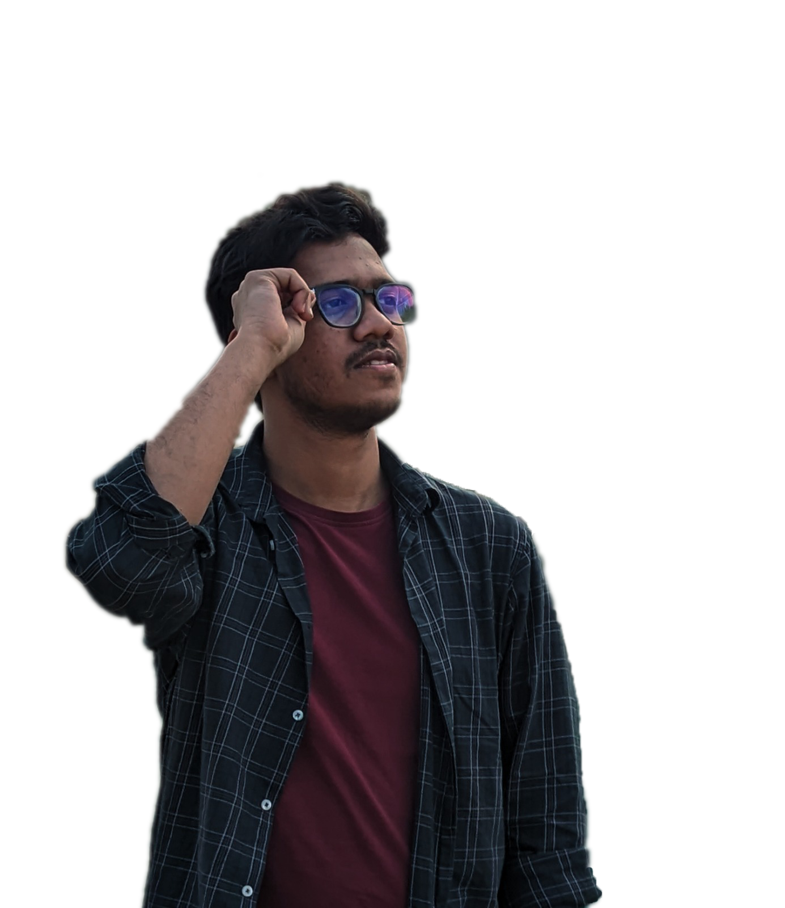

School
Milestone School — Completed SSC focusing on Science with GPA-5. Built a strong foundation in core subjects and developed an early interest in programming and problem solving.
Welcome to my portfolio website. Here you can find information
about my skills, education, and experience.
So many books, so little time.Frank Zappa

I am a passionate software developer focused on building efficient, maintainable, and scalable applications. I have a strong foundation in computer science fundamentals and experience with languages and tools such as JavaScript, Python, HTML/CSS, and Git. I enjoy turning ideas into working software and pay close attention to clean code, performance, and user experience.
Recently, I have worked on small full-stack projects that include REST APIs, simple databases, and responsive front-end interfaces. I enjoy hands-on problem solving — from debugging tricky issues to designing modular components that are easy to test and reuse. I also contribute occasionally to open-source projects to sharpen my skills and collaborate with other developers.
Outside of coding, I enjoy reading technical books, learning new frameworks and tools, and participating in coding challenges to improve my craft. My current goals are to deepen my knowledge of software architecture, cloud-native development, and to work on projects that make a positive impact.
Name: Abdul Ahad
Email: abdul.ahad1@g.bracu.ac.bd
Phone: +8801812345678
I am currently an undergraduate student of BRAC University in Computer Science. My academic journey has equipped me with a solid understanding of programming principles and software development practices. Currently I am doing CSE391 where I am learning about web development and working on various projects to enhance my skills. Join the discord channel of CSE391 from here to learn more.
Milestone School — Completed SSC focusing on Science with GPA-5. Built a strong foundation in core subjects and developed an early interest in programming and problem solving.
Rajuk Uttara Model College — Completed HSC focusing on Science with GPA-5. Improved analytical thinking and participated in coding club activities that introduced me to web technologies.
BRAC University — BSc in Computer Science (ongoing). Coursework includes data structures, web development, databases, and software engineering. Active on projects and group assignments.

Reading technical books, exploring new frameworks, participating in coding challenges.

Small full-stack apps, REST API experiments, and responsive front-end demos.

My favourite movies — a mix of classics, sci-fi, and thought-provoking dramas.